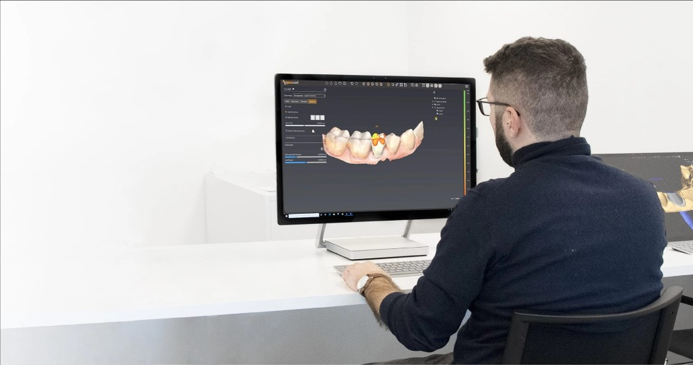
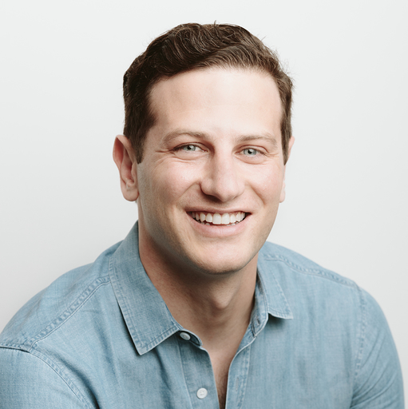

Mi sento sicuro perché le lavorazioni sono di alta qualità e durature, fondamentale per i miei pazienti. So con certezza che è il laboratorio che può soddisfare con precisione le mie richieste specifiche.
Dr. Marco Santoro — Odontoiatra


IL NUOVO PROGETTO
Con grande entusiasmo annunciamo la nascita di GIS Centro Fresaggio, un progetto che nasce da passione, impegno e dalla voglia di innovare.
L'esperienza di Centro Fresaggio Pilota si intreccia con questa nuova realtà, dando vita a un percorso che unisce competenze, visione e qualità al servizio dei nostri Clienti.
Seguiteci per scoprire tutte le novità, le promozioni esclusive e per accompagnarci in questo nuovo cammino di crescita.
Un nuovo percorso è appena iniziato.
CHI SIAMO
Supportiamo laboratori odontotecnici con un team di più di 10 persone, esperto in fresaggio digitale e project management. Ogni progetto è seguito in ogni dettaglio, dalla consulenza iniziale fino alla consegna, con soluzioni su misura anche per i casi più complessi.
Tecnologia all'avanguardia, formazione continua e attenzione alla qualità sono la nostra garanzia per risultati rapidi, precisi e affidabili. Affidati a un partner che unisce competenza, trasparenza e supporto costante.
Scopri chi siamo
Mi sento sicuro perché le lavorazioni sono di alta qualità e durature, fondamentale per i miei pazienti. So con certezza che è il laboratorio che può soddisfare con precisione le mie richieste specifiche.
Dr. Marco Santoro — Odontoiatra
Tempi rispettati, comunicazione chiara e supporto in ogni fase. Il fresaggio digitale è sempre conforme ai file e alle indicazioni che inviamo: un partner su cui contare ogni giorno.
Laura Bianchi — Tecnico di laboratorio

Abbiamo integrato GIS nei nostri flussi CAD/CAM e la qualità delle strutture è costante. Il team risponde in tempi brevi e la tracciabilità del caso è sempre sotto controllo.
Giuseppe Romano — Responsabile produzione

SERVIZI
Laser melting, ceramizzazione, progettazione CAD e fresatura CAM: precisione digitale per il tuo laboratorio.
Strutture metalliche tramite tecnologia Laser Melting, che garantisce massima precisione e resistenza. Questa lavorazione innovativa permette di ottenere protesi leggere, durevoli e perfettamente adattabili.
Lavorazioni di ceramizzazione curate nei dettagli, per protesi dall'estetica naturale e duratura. La precisione nella stratificazione assicura armonia cromatica e un'integrazione perfetta con i denti naturali.
Questa tecnologia innovativa permette di ottenere soluzioni personalizzate, affidabili e dai dettagli accurati.
Sistemi CAD/CAM per progettare e realizzare protesi dentali con altissima precisione. La tecnologia digitale assicura tempi ridotti, adattamento ottimale e risultati estetici di qualità.
Protocolli rigorosi per una qualità costante, ogni volta!
L'80% dei nostri lavori viene consegnato prima delle scadenze concordate.
L'intera linea di produzione è digitalizzata, a un clic di distanza.
Ogni errore, ogni rilavorazione è coperta da noi, in ogni caso!
Il nostro team è sempre pronto ad assistervi.
Materiali certificati e maestria nella creazione di protesi dentali.
PROCESSO
Dalla tua richiesta al sorriso del paziente. Preciso, veloce, senza sorprese!
Carica in modo sicuro il tuo file STL, PLY o CAD attraverso il nostro portale
Revisione esperta e ottimizzazione dei tuoi design per risultati ottimali
Produzione di precisione con monitoraggio in tempo reale e controllo qualità completo
Consegna espressa con tracciamento completo e documentazione inclusa
I NOSTRI STANDARD
Consegna in 24/48 ore
Tempi rapidi e tracciabili
Supporto eccellente
Assistenza dedicata al laboratorio
Lavori certificati
Qualità controllata e documentata
9:00 - 18:00
Dal Lunedì al Venerdì
FAQ
I tempi variano in base alla complessità del lavoro. Per lavori standard, il tempo medio è di 5-7 giorni lavorativi. In casi urgenti, contatta il nostro team per opzioni accelerate.
Applichiamo protocolli rigorosi e controllo qualità in ogni fase. Ogni lavoro viene sottoposto a ispezione dettagliata per garantire perfezione estetica e funzionale.
Lo zirconio è il nostro materiale preferito per l'alto livello estetico e la resistenza. In collaborazione con il medico, scegliamo i materiali più adatti: titanio, disilicato, metallo, porcellana, resina, ecc.
Siamo a una telefonata di distanza! In ogni fase del processo puoi scriverci o chiamarci per ricevere aggiornamenti in tempo reale.
Rilavorazioni gratuite, sempre! Siamo impegnati a offrire il meglio e a evitare qualsiasi problema per i nostri clienti.
Accettiamo i formati più diffusi per il flusso CAD/CAM, tra cui STL, PLY e file di progettazione compatibili con le principali piattaforme. In caso di dubbi, il nostro team ti guida nella preparazione del file ideale.
Sì, organizziamo spedizioni affidabili con corrieri selezionati e tracciamento dove disponibile. I tempi dipendono dalla destinazione e dal tipo di servizio concordato.
Il nostro team supporta laboratori e professionisti nella valutazione tecnica di casi impegnativi, dalla pianificazione alla scelta dei materiali più adatti, in coordinamento con le indicazioni cliniche.
I file e le informazioni relative ai lavori sono trattati con attenzione e utilizzati esclusivamente per la produzione e il supporto richiesto, nel rispetto delle normative sulla privacy applicabili.